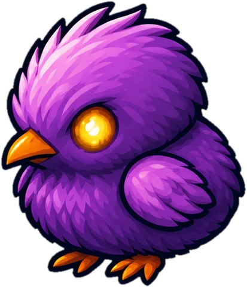

 Wind
WindTap a stage to read its story.
A round, plump little bird cloaked in deep violet feathers, Corvyx tucks its stubby wings tight against its body and stares with wide, glowing amber eyes that seem to see right through walls. It haunts the lower drafts of Gale Ridge, riding updrafts no bigger than a breath. Drawn to bright sounds it hears spoken aloud, it will repeat single notes in the dark until it falls asleep mid-echo, perched on nothing at all.
Field note: Corvyx repeats the last sound it hears before sleeping, waking its roost all night.
Storm Spire. Corvyx and its family are found in the Storm Spire. See everyone who lives there.
Share a Bond Food that matches its types to become friends. Corvyx loves:
A Bond Food is not a trick. It joins your spirit with the Kimuro's spirit, and only when it chooses you.
Print the Kimuro adventure packs: mazes, cards, a board game and Bond Mark medals.
See the printable packs